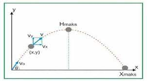

Gerak parabola adalah gerakan benda yang dilempar ke udara dengan lintasan berbentuk parabola. Gerakan ini terjadi ketika suatu benda diberikan kecepatan awal dan ditarik oleh gaya gravitasi.
Gerak parabola memiliki karakteristik tertentu, seperti tinggi maksimum, jarak terjauh, waktu terbang, dan waktu yang dibutuhkan untuk mencapai ketinggian maksimum.
Berikut adalah rumus-rumus gerak parabola:
